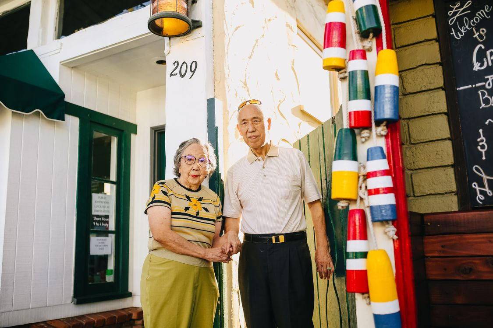

Seniors
Older adults who no longer wish to live alone.
Boarding home and companion support
A clean, safe, and supportive Houston home where adults can live with dignity, independence, and genuine connection.
Safe. Supportive. Respectful. Always.

Our mission
At Tru Luv, we provide a clean, safe, and supportive home where adults can live with dignity, independence, and a sense of belonging. Companion and sitter support can be discussed separately when someone needs a little more help.
“People deserve a place to belong.”
Who we serve
Our home welcomes adults who are able to live independently and can self-evacuate.
Older adults who no longer wish to live alone.
Independent adults seeking a stable, respectful home setting.
Individuals transitioning from hospitals or rehabilitation programs.
Veterans looking for comfort, community, and dependable surroundings.

A supportive rhythm
Residents have the freedom to live independently while enjoying shared spaces, friendly company, and practical services that make daily life easier.
Services included
Dependable meals prepared as part of the home’s daily routine.
Comfortable private or shared room options.
A cared-for setting without the burden of managing a household alone.
Routine laundry support for day-to-day ease.
Support with appointments, shopping, and other planned needs.
Friendly shared activities in a safe, home-like environment.
Connection, entertainment, and familiar comforts.

Optional companion & sitter support
Our boarding home is designed for adults who can live relatively independently and self-evacuate. Sitter and companion support is separate from standard residential living, so families can discuss the help they need without assuming a higher level of care is included in the room.
Please contact us to discuss service scope, availability, and separate pricing. Needs beyond companionship should be discussed directly so we can confirm what support is appropriate and available.
Ask about sitter support
Contact us today
Speak with Mrs. Akilah Jones, Owner / Administrator, to learn more about availability and next steps.